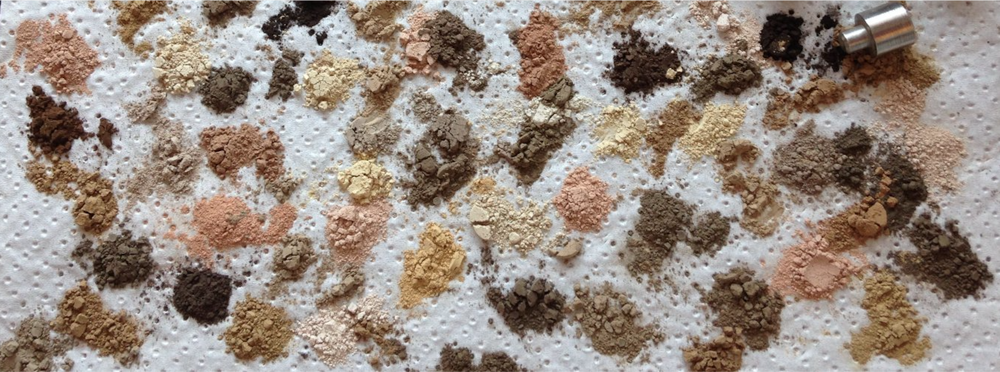

Soil Predictions using MIR-Spectroscopy
5/8/2020
1 Introduction

This guide documents the use of MIR-spectroscopy at the Woods Hole Research Center, to predict various soil health properties. It is aimed at helping other teams build soil spectral libraries, create models from their data, access model performance against known values, and ultimately make predictions on new data. The machine learning methods outlined in this document were selected after assessing the performance of a variety of models. This process is explained in the following paper:
Dangal S.R.S., J. Sanderman, S. Wills, and L. Rameriz-Lopez. 2019. Accurate and Precise Prediction of Soil Properties from a Large Mid-Infrared Spectral Library. Soil Systems 3(1):11. doi:10.3390/soilsystems3010011
Questions and comments can be sent to jsanderman@whrc.org or crivard@whrc.org


Woods Hole Research Center
Website: whrc.org
Instagram: woodsholeresearchcenter
Address: 149 Woods Hole Rd, Falmouth, MA 02540